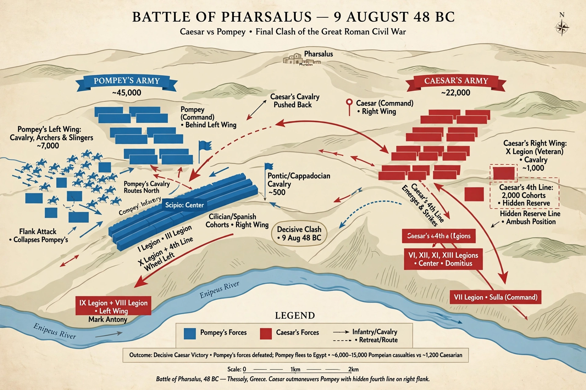

| Battle of Pharsalus | |
|---|---|
| Date | 9 August 48 BC |
| Location | Near Pharsalus, Greece |
| Result | Decisive Caesarian victory |
| Belligerents | Caesarians vs. Pompeians (Optimates) |
| Commanders | Julius Caesar; Pompey the Great |

The Battle of Pharsalus was the decisive battle of Caesar's civil war against the Roman Senate and Pompey the Great, fought on 9 August 48 BC near Pharsalus in central Greece. Despite being heavily outnumbered, Caesar's veteran legions routed Pompey's army, ending organised senatorial resistance in the East and effectively confirming Caesar as master of the Roman world.
After crossing the Rubicon in 49 BC and securing Italy and Spain, Caesar crossed the Adriatic in January 48 BC. Following the inconclusive siege of Dyrrhachium, where Caesar suffered a setback, he withdrew into Thessaly; Pompey, under pressure from the senators in his camp to finish the war, followed and accepted battle. Ancient sources put Pompey's army at roughly 40,000–45,000 infantry and some 7,000 cavalry, against Caesar's 22,000 infantry and about 1,000 cavalry.
Pompey planned to crush Caesar's weaker right wing with a massed cavalry charge, then roll up his line. Caesar anticipated the move: he withdrew six cohorts from his third line to form a hidden fourth line behind his cavalry. When Pompey's horsemen charged and drove back Caesar's cavalry, they were met by the fourth line's infantry, who thrust their pila upward into the riders' faces. Pompey's cavalry fled, his archers and slingers were cut down, and the fourth line fell on the rear of Pompey's left wing, collapsing his army. Caesar then stormed Pompey's camp; Pompey escaped, fleeing eventually to Egypt, where he was murdered on arrival.
Caesar claimed to have lost only about 200 soldiers (his own account gives 15,000 enemy dead, likely understating his losses and overstating theirs), and he pardoned many captured senators, including Brutus and Cassius. Pompey's sons and Cato continued the war in Africa and Spain until 45 BC, but Pharsalus marked the decisive turning of the civil war.
See also: First Triumvirate · Julius Caesar